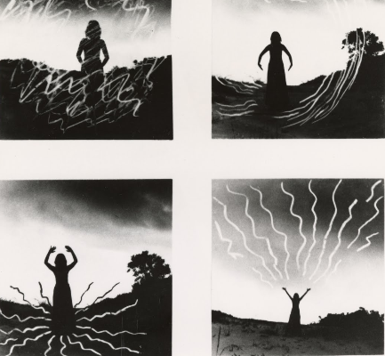

일기
html specification
이유는 두가지인데
조금만 익혀도 금방 잘 해내서기도 하지만
무엇보다도 내가 만든 걸 정말 보고 또 보고,
더 잘하고 싶어서 스스로 찾아보게 되기 때문이다.
요즘은 잘하는 것보다 좋아해서 지속하고싶은 게 더 소중하다고 느끼는데
무언가 아름다운 걸 만들어낸다는 것이 나에겐 그렇다.
오늘 조금 힘을 줘야하는 홍보물을 만들면서
액자처럼 이미지를 잘라넣는 클리핑 마스크도 알게되었고,
도형에 패턴을 넣는 법도 만져보다 익혔다.
오늘 마무리를 해야하는 건 아니지만 더 작업하고 싶었는데,몸이 안좋아서 주말에 작업하려고
드라이브에 넣어두고 왔다.
며칠 전에는 망고보드로 홍보물을 만들었는데, 내가 보기에도 꽤나 예뻤는데
다른 사람들도 마음에 들었는지 다들 가져다 썼다. 문화공간과 예술가를 연계한 공연 홍보물이었는데,
공간 인스타에도, 영상촬영으로 협력을 한 단체 인스타에도 올라갔다.
예술가 중 한 분은 자기 소개 페이지를 카톡 프사로 하기도 했다. 꽤 많이 뿌듯했다!

일이 끝나가니 다음 스텝을 준비하라고 하는 재촉이 또 들려온다.
내가 이 일을 하고싶지 않다면 열심히 공부하라고, 이력서를 넣으라고,
틀린 말은 아닌데 나는 좀 여유 가지게 둬도 알아서 잘 해낼것 같다.
되려 불안이 날 삼키지 않도록 잘 돌보면서, 새싹을 잘 틔워보고 싶어.
나는 최근 주로 홍보 일을 하고 있는데 작은 조직의 특성상 정말 이거 저거 많이 하게된다.
일하는 동안 포토샵. 인디자인. 프리미어까지 다 만져보고 다뤄보았다.
그럴수록 디자인이나 영상편집, 글쓰기, 무엇이 되었든 창작을 일로써 해야겠다는 생각이 들었다.